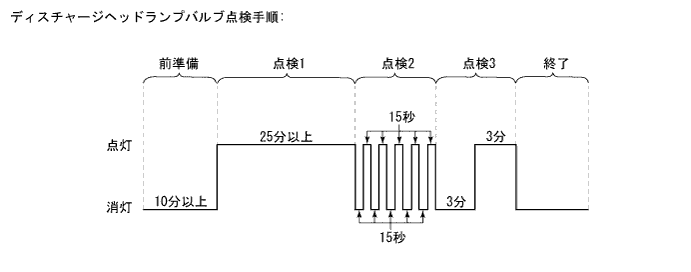
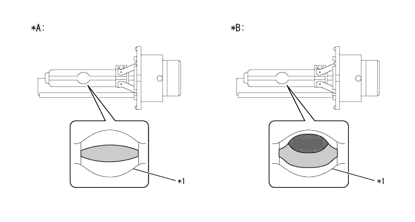

Discharge Headlight Bulb On-vehicle Inspection |
| 1. Inspect Discharge Headlight Bulb |
Preparation
Before performing the inspection, keep the discharge headlight bulb off for 10 minutes or more so that it is completely cooled.
Inspection 1
Illuminate the discharge headlight bulb for 25 minutes or more, and check that it illuminates normally at the start and end of illumination.
Inspection 2
After inspection 1, repeatedly turn the discharge headlight bulb off for 15 seconds and on for 15 seconds (5 times each), and check that it illuminates normally.
Inspection 3
After inspection 2, turn off the discharge headlight bulb and leave it off for 3 minutes.
After leaving it off for 3 minutes, illuminate the discharge headlight bulb for 3 minutes, and check that it illuminates normally at the start and end of illumination.

Inspection 4
Remove the discharge headlight bulb and visually check the condition of the arc tube.

| *A | Discharge headlight bulb normal | *B | Discharge headlight bulb at end of service life |
| *1 | Arc tube | - | - |
| Inside of arc tube | Swollen/cloudy white |